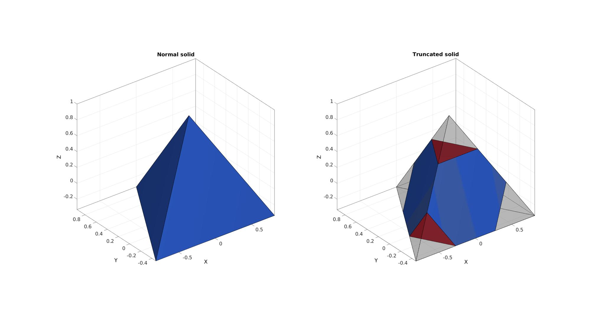
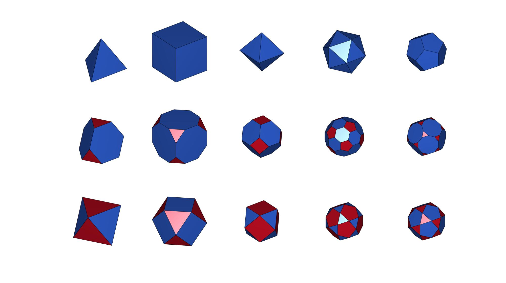
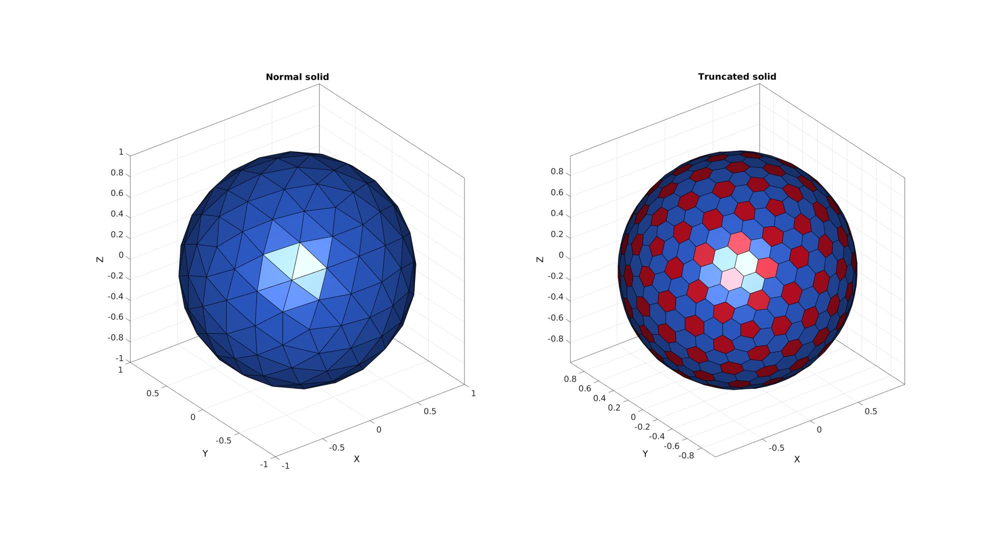
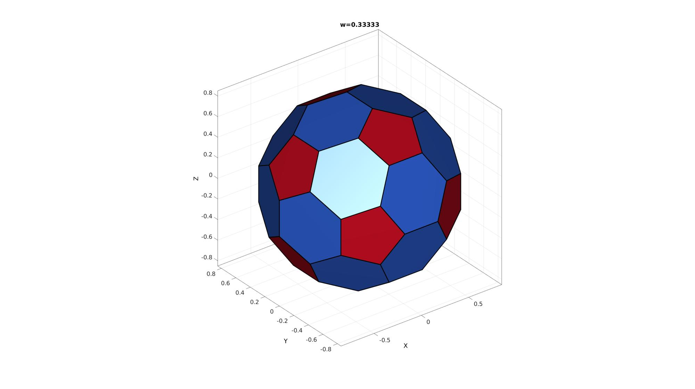
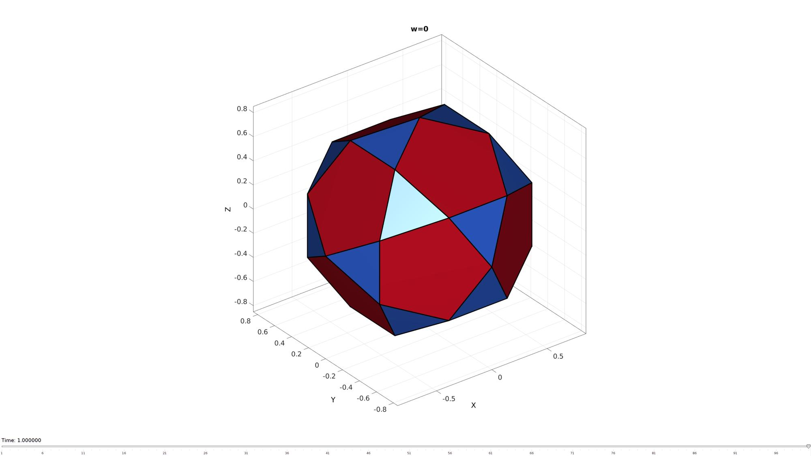

truncatePolyhedra
Below is a demonstration of the features of the truncatePolyhedra function
Contents
Syntax
[FC,VC,CC]=truncatePolyhedra(F,V,w);
Description
This function computes the truncated form of the input solid as specified by the input faces (F), vertices (V), and the truncation factor (w). The output is the patch data (faces, vertices, and color/face labels) for the truncated solid. The truncation factor ranges between 0 and 1. If unspecified or empty the default value is: w=tan(pi/(size(F,2)*2))/tan(pi/(size(F,2))); which provides the uniform truncation.
Examples
clear; close all; clc;
Truncating a solid
Creating a platonic solid which will be truncated
[V,F]=platonic_solid(1,1); %Get a tetrahedron, the first platonic solid C=zeros(size(F,1),1); %Create color data for visualization
Truncating a platonic solid
[FC,VC,CC]=truncatePolyhedra(F,V);
Visualizing result
cFigure; subplot(1,2,1);hold on; title('Normal solid'); gpatch(F,V,C,'k',1,1); axisGeom; camlight headlight; caxis([0 1]); subplot(1,2,2);hold on; title('Truncated solid'); gpatch(F,V,'kw','k',0.25,1); gpatch(FC,VC,CC,'k',1,1); axisGeom; camlight headlight; caxis([0 1]); colormap(gjet(2)); drawnow;
Demonstration of truncation for all platonic solids
cFigure; for q=1:1:5 [V,F]=platonic_solid(q,1); C=zeros(size(F,1),1); [FC,VC,CC]=truncatePolyhedra(F,V); subplot(3,5,q);hold on; gpatch(F,V,C,'k',1,1); axisGeom; camlight headlight; caxis([0 1]); axis off; subplot(3,5,q+5);hold on; gpatch(FC,VC,CC,'k',1,1); axisGeom; camlight headlight; caxis([0 1]); axis off; [FC,VC,CC]=truncatePolyhedra(F,V,0); subplot(3,5,q+10);hold on; gpatch(FC,VC,CC,'k',1,1); axisGeom; camlight headlight; caxis([0 1]); axis off; end colormap(gjet(2)); drawnow;
Truncating a general closed surface
% Creating a triangulated sphere [F,V]=geoSphere(2,1); C=zeros(size(F,1),1); %Create color data for visualization
Truncating the solid solid
[FC,VC,CC]=truncatePolyhedra(F,V);
Visualizing result
cFigure; subplot(1,2,1);hold on; title('Normal solid'); gpatch(F,V,C,'k',1,1); axisGeom; camlight headlight; caxis([0 1]); subplot(1,2,2);hold on; title('Truncated solid'); gpatch(FC,VC,CC,'k',1,1); axisGeom; camlight headlight; caxis([0 1]); colormap(gjet(2)); drawnow;
Create animated view to study effect of the truncation factor
Prepare visualization
[V,F]=platonic_solid(4,1); w=tan(pi/(size(F,2)*2))/tan(pi/(size(F,2))); [FC,VC,CC]=truncatePolyhedra(F,V,w); hf=cFigure; hold on; ht=title(['w=',num2str(w)]); hp=gpatch(FC,VC,CC,'k',1,3); axisGeom; colormap(gjet(size(F,1)+size(V,1))); %icolorbar; camlight headlight; drawnow;
Create animation window
nSteps=100; %Number of animation steps %Create the time vector animStruct.Time=linspace(0,1,nSteps); %Create w range w=linspace(1,0,nSteps); for q=1:1:nSteps [~,VC,~]=truncatePolyhedra(F,V,w(q)); %Set entries in animation structure animStruct.Handles{q}=[hp]; %Handles of objects to animate for qh=1:1:numel(hp) animStruct.Props{q}(qh)={'Vertices'}; %Properties of objects to animate animStruct.Set{q}(qh)={VC}; %Property values for to set in order to animate end animStruct.Handles{q}(end+1)=[ht]; %Handles of objects to animate animStruct.Props{q}(end+1)={'String'}; %Properties of objects to animate animStruct.Set{q}(end+1)={['w=',num2str(w(q))]}; %Property values for to set in order to animate end anim8(hf,animStruct);
GIBBON footer text
License: https://github.com/gibbonCode/GIBBON/blob/master/LICENSE
GIBBON: The Geometry and Image-based Bioengineering add-On. A toolbox for image segmentation, image-based modeling, meshing, and finite element analysis.
Copyright (C) 2019 Kevin Mattheus Moerman
This program is free software: you can redistribute it and/or modify it under the terms of the GNU General Public License as published by the Free Software Foundation, either version 3 of the License, or (at your option) any later version.
This program is distributed in the hope that it will be useful, but WITHOUT ANY WARRANTY; without even the implied warranty of MERCHANTABILITY or FITNESS FOR A PARTICULAR PURPOSE. See the GNU General Public License for more details.
You should have received a copy of the GNU General Public License along with this program. If not, see http://www.gnu.org/licenses/.